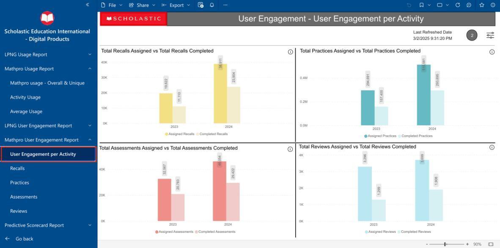
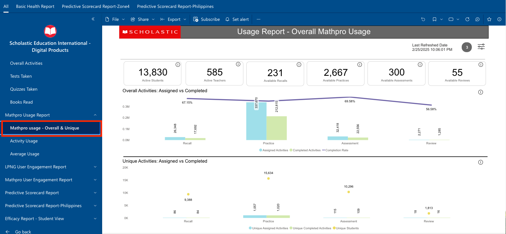
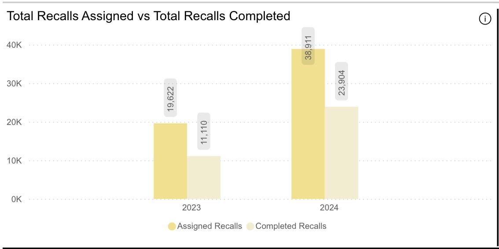
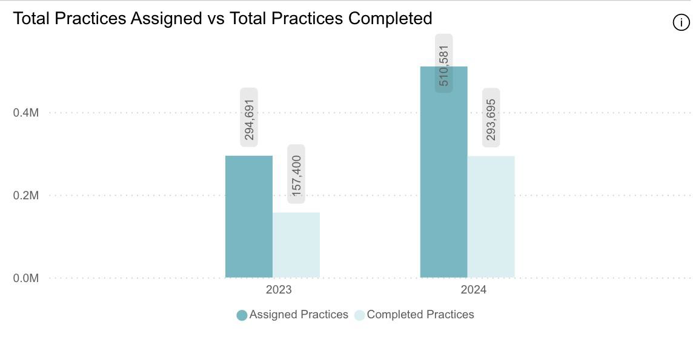
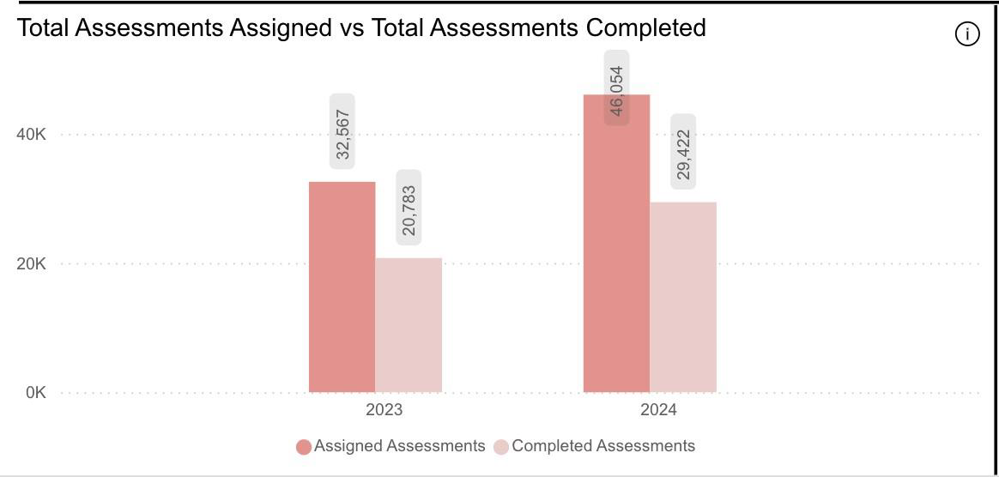
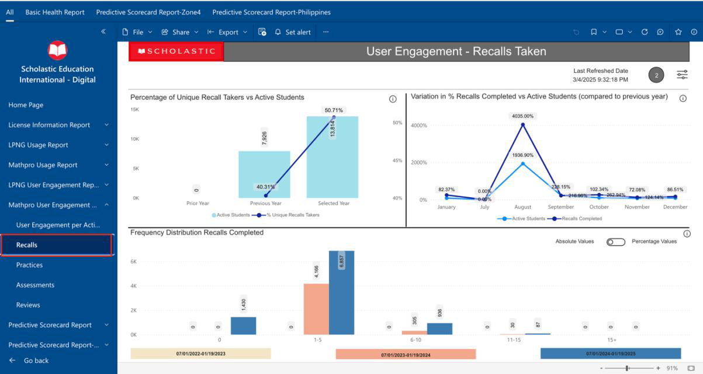

Mathpro Usage Report - Release Notes
Table of Contents
1. Accessing the Mathpro Usage Report
Click on Mathpro Usage Report. By default, the Mathpro Usage – Overall and Unique report will be opened.
2. The KPI Panel
The KPI Panel is fixed on the top of every page of this report. Based on the filter selection for zone, region, country, state, consultant, school name, grade, curriculum, and date range, the KPI values will change. It contains the following information:
- Active Students
- Active Teachers
- Available Recalls
- Available Practices
- Available Assessments
- Available Reviews
3. Mathpro Usage – Overall and Unique
This page contains the following information:
- Overall Activities: Assigned vs Completed
- Unique Activities: Assigned vs Completed
3.1 Export and Explore in Excel

Follow these steps to export the graph to Excel:
- Click on the three-dot menu at the top of the graph.
- Select "Export Data" from the dropdown menu.
3.2 Which Data Do You Want to Export?
- Select the file format (either .xlsx or .csv).
- Click "Export" at the bottom right of the window to complete the process.
3.3 Overall Activities: Assigned vs Completed
This section shows the comparison between assigned and completed activities for the overall usage of Mathpro.
3.4 Unique Activities: Assigned vs Completed
Here, you can view the unique activities assigned versus those completed by users, providing insights into engagement levels.
4. Activity Usage

Detailed statistics about how activities are being used within the Mathpro platform, including frequency and engagement metrics.
5. Average Usage
This section displays the average usage statistics for Mathpro across different time frames and user segments.